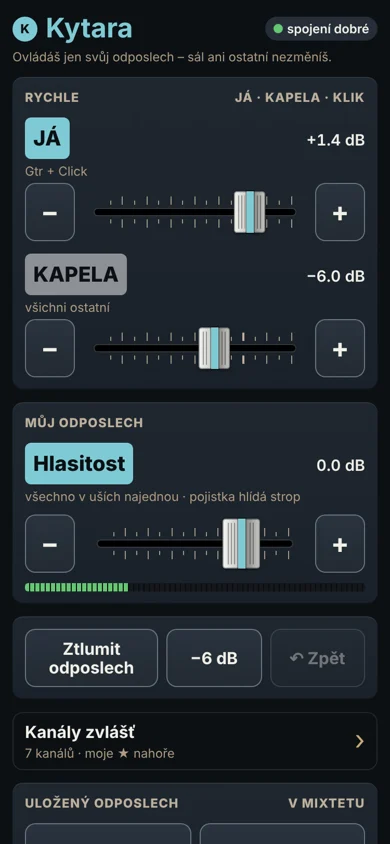

Odposlechy pro kapely bez zvukaře · Behringer XR18
Každý si ladí svůj odposlech z vlastního mobilu.
Mixtet je appka pro Mac, která z pultu XR18 udělá kapelní systém. Člen naskenuje QR a ladí si svůj in‑ear v prohlížeči mobilu – bez instalace a bez možnosti sáhnout do cizího mixu nebo do sálu. Zvuk jde z výstupů pultu do in‑earů nebo beden jako dosud, mobil je jen dálkové ovládání. Kapelník má sál, scény a ovladač na jednom místě.
- Členové nic neinstalují
- Mobil ovládá jen svůj odposlech
- Při výpadku hraje mix dál
Vyvíjíme a testujeme na Behringer XR18 · appka běží na Macu · beta zdarma


Podívej se, jak to funguje
Jak to vypadá na zkoušce – od QR po kapelníka u Macu.
Znáte to ze zkoušky?
„Dej mi víc mě!“
Jeden dělá zvukaře všem a mezi písněmi se ladí odposlechy místo hraní.
„Kdo sáhl na master?“
Appka v mobilu umí všechno, takže si někdo omylem pohne se sálem nebo s cizím mixem.
„Appka se zase odpojila, zadej IP…“
Telefon usne, appka ztratí spojení a uprostřed zkoušky se hledá IP adresa.
Jak to funguje – pro členy kapely
Tři kroky a žádná appka k instalaci.
- 1
Naskenuj QR
Kapelník ti dá QR – na Macu nebo vytištěné na kartičce na zdi zkušebny. Foťák v mobilu otevře tvůj odposlech v prohlížeči. Žádná IP adresa.
- 2
Laď si sám
Velké posuvníky JÁ a KAPELA, hlasitost a Ztlumit odposlech. Kdo chce víc, otevře si kanály zvlášť a označí si ★ ty svoje.
- 3
Zamčeno jen na tebe
Mobil ovládá jen tvůj odposlech. Sál ani ostatní nezměníš – hlídá to Mac (hub), přes který mobil s pultem mluví – ne nastavení v appce v telefonu.
Pro kapelníka – celý pult na Macu
Na Macu vidíš mix celé kapely. Běžné věci jsou velké a po ruce, zvukařské schované, dokud je nepotřebuješ.
Mixer jako pult
Fadery, měřáky, MUTE a mute skupiny. Barva kanálu = komu patří, takže hned vidíš, čí kytara to je.
Odposlechy celé kapely
Vidíš, co kdo slyší. Když někdo neslyší, appka řekne proč a nabídne opravu jedním klikem.
Režim Koncert
Velké písmo, píseň HRAJE / DALŠÍ, velké MUTE. Mezerník přepne mute skupinu – třeba ztlumí nástroje mezi písněmi.
Kanál jednoduše
„Zní kopák dobře?“ Hlasitost, Čistota (EQ) a Vyrovnání (kompresor). Celý řetězec EQ a kompresoru, jen když chceš.
Rychlá úprava vedle mixu
Vyber kanál a vpravo upravíš EQ, dynamiku i odposlechy, aniž bys odešel z Mixeru.
Písně a scény
Každá píseň má svůj mix. Scéna mění sál, odposlechy nepřepíše, a předem vidíš, co se změní.
Snímky jsou z appky s ukázkovou kapelou. Appka pro Mac je zatím česky, stránka člena v mobilu česky i anglicky.
Postavené pro muzikanty, ne pro zvukaře
Nastavíš to sám za večer. Appka mluví jako kapela a nic nedělá za tvými zády.
Průvodce za 10 minut
Připojení k pultu, kdo poslouchá který odposlech, zkouška kanálů a QR pro mobily – jedna věc na obrazovku.
Vyzkoušej bez pultu
Ukázkový pult běží jen v Macu. Projdeš si všechno doma, než přijdeš do zkušebny.
Kapelní slova
„Odposlech pro Toma“, „sál“, „mute skupina Nástroje“. Žádné Bus 3 ani LR v hlavních textech.
Pojistka uší
Tvrdý kompresor (100:1) na výstupu každého odposlechu stáhne rány a zpětnou vazbu. Špunty ani rozumnou hlasitost nenahradí.
Kontrola před koncertem
Pult, záloha, pojistky, mobily, ovladač. Co nesedí, je žlutě a vedle má tlačítko na opravu.
Ovladač do ruky
Korg nanoKONTROL Studio je předmapovaný: fadery, MUTE, Play = mute skupina. Další ovladače naučíš jedním pohybem.
Nic nepředstírá
Hodnota platí, až ji potvrdí pult. Při výpadku Wi-Fi hraje mix dál, jak byl, a appka to řekne.
Každý krok jde vrátit
⌘Z vrátí i načtenou scénu. Deník ukáže, kdo co změnil – Mac, ovladač, nebo mobil člena.
Hledáme 50 zakládajících kapel
Beta je zdarma, bez karty a závazku.
Jak se to liší od ostatních
| Mixtet | Oficiální appky (X AIR Edit, X AIR-Q / MX-Q) | Mixing Station | Osobní mixéry (P16, myMix) | |
|---|---|---|---|---|
| Pro koho | kapela bez zvukaře | zvukař (Edit), člen kapely (X AIR-Q) | zvukař, pokročilý muzikant | člen kapely |
| Odposlech člena | mobil, prohlížeč přes QR | appka v každém telefonu | appka v každém zařízení | krabička a kabel u každého |
| Zámek na vlastní odposlech | ano, drží ho hub (Mac), mobil nic neobejde | ne – appka v mobilu umí celý pult | ano, umí zamknout na jeden bus – drží ho appka v zařízení | ano |
| Co to stojí člena | nic, nic se neinstaluje | nic | licence pro zařízení | ≈ 139–899 $ za muzikanta |
| Kapelní funkce | mute skupiny na mezerníku, MLUVIT KE KAPELE, písně, Pojistka uší, MIDI ovladač | osobní mix (X AIR-Q), jinak celý pult | velmi bohaté, nastavíš si sám; MIDI v Pro | jen vlastní mix |
Podle veřejně dostupných informací k říjnu 2026. Názvy patří jejich vlastníkům; Mixtet s nimi není spojen.
Co potřebuješ
Pult Behringer XR18
Vyvíjíme a testujeme na něm. XR12, XR16 a Midas MR18 mluví stejným jazykem – testery s nimi hledáme.
Mac s macOS 14 nebo novějším
Na Macu běží Mixtet. Verzi pro iPad testujeme v kapele.
Wi-Fi router
Doporučený. Na zkoušku stačí i Wi-Fi pultu.
Mobily členů
iPhone i Android, stačí prohlížeč.
In‑eary nebo sluchátka
Zvuk jde z výstupů pultu pro odposlechy (bezdrátově i kabelem), ne z mobilu.
MIDI ovladač – volitelně
Korg nanoKONTROL Studio a další.
Beta zdarma
50 zakládajících kapel
Jak probíhá testování
- 1
Přihlas kapelu
Minuta času, pár kliknutí.
- 2
Ozveme se
Kapely bereme po vlnách. Přednost má XR18 bez zvukaře.
- 3
Stáhneš appku pro Mac
Odkaz ke stažení a krátký návod přijde e-mailem.
- 4
Řekneš nám, co nefunguje
Po 2–3 zkouškách 20 minut rozhovoru. Chyby kdykoli přes formulář zpětné vazby.
- Zdarma po celou betu, bez karty a závazku.
- Cenu zatím nemáme. Než ji nastavíme, zeptáme se vás.
- Členové kapely nic neinstalují.
Co chystáme
- TeďBeta pro Mac (česky) s pultem XR18.
- DalšíAnglická verze appky, instalace s automatickými aktualizacemi, iPad jako samostatný hub bez Macu (testujeme).
- PozdějiWindows a Android, pulty X32 / M32 – podle toho, co napíšete do přihlášky.
Časté otázky
Je to appka od Behringeru?
Ne. Mixtet je nezávislá appka, se společnostmi Behringer ani Music Tribe není spojená.
Musí si členové kapely něco instalovat?
Ne. Naskenují QR a odposlech se otevře v prohlížeči mobilu. Na plochu si ho můžou přidat jako ikonu.
Funguje to s XR12, XR16 nebo MR18?
Používají stejný protokol jako XR18, takže by měly. Na skutečném pultu jsme je ale zatím neověřili – testery s nimi hledáme.
Je appka i anglicky?
Stránka člena v mobilu ano. Appka pro Mac je zatím česky; anglickou verzi chystáme před mezinárodní vlnou bety.
Co když vypadne Wi-Fi nebo Mac?
Pult hraje dál, jak byl. Mixtet nic nepošle naslepo, po návratu se sám připojí a mobily taky.
Funguje to na iPadu nebo Windows?
Mobil člena funguje všude. Appka pro kapelníka je zatím na Macu, verzi pro iPad testujeme a Windows s Androidem plánujeme. Do přihlášky napiš, na čem bys ji chtěl.
Proč je mezi mobilem a pultem Mac?
Na pultu je jediný klient – Mac (hub). Mobily mluví s ním, ne přímo s pultem: zámek na odposlech člena drží hub a z telefonu nejde obejít, pult nemá desítky připojení a mobil, který usne nebo ztratí Wi‑Fi, nic nerozhodí. Zvuk přes Mac nejde – jde z pultu rovnou do in‑earů.
Kolik to bude stát?
Během testování nic. Cenu nastavíme podle zkušeností testerů a zakládající kapely ji uslyší jako první.
Co se stane s mými údaji?
Použijeme je jen k betě a smažeme nejpozději do 2 let. Kdykoli napiš a smažeme je hned.
Kdo za tím je
Mixtet stavíme v kapele KRAI z Litoměřic. Hrajeme bez zvukaře na XR18 a appku testujeme na vlastních zkouškách a koncertech. Chceš se na něco zeptat? Napiš na booking@krai.cz.